|
.: Changing Airbox Filter :. |
|
The Airbox on the 156 has bolts that rust up, and or snap off. You want to save a little money then you can follow this guide
on how to replace the bolts and change the air filter at the same time.
Note: This guide was created with a 2.0 T-Spark 156, the process may differ in other models
The problem:The bolts on the air box have rusted and snapped off or just rusted up and wont come out.
Prep:Tools and parts
Tools required...
"flat" screw driver
Plyers, or a tool to reattach the silver clips.
6mm spanner/socket
6mm bolts x4 (3 needed, but best to have a spare)
8mm washers
Jubille clips
String plastic glue aka plastic cement
Drill & drill bit to remove old bolts.
1: First step is to head off down to B&Q (other hardware stores are avalible) for the parts required.
Below are pics of the bits you need to pick up.
a: 6mm bolts x4
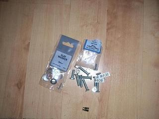
b: Jubille clips
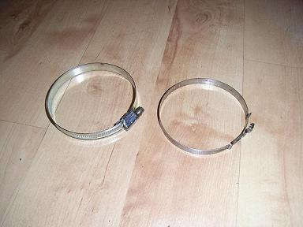
b: not a clue?
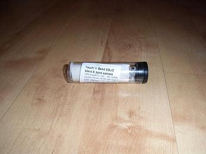
2: First remove the fuse cover just beside the battery.
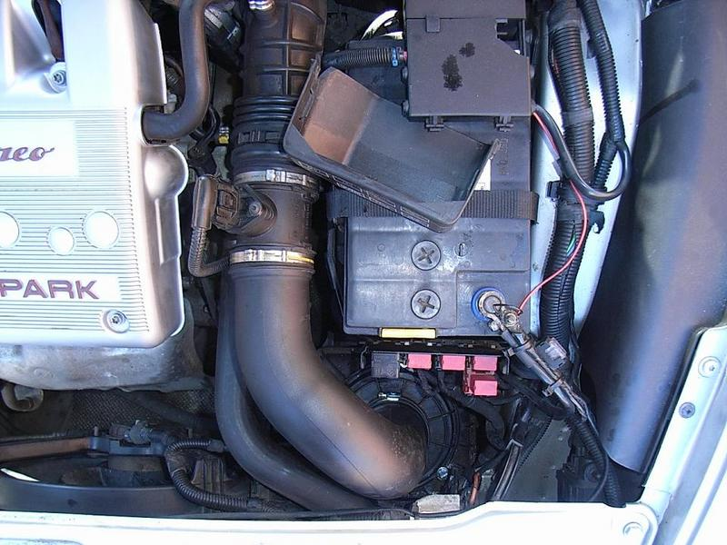
3:Then using a screw driver get the clips of theres one at the top of the air pipe next to the maf and on at the top of the airbox.
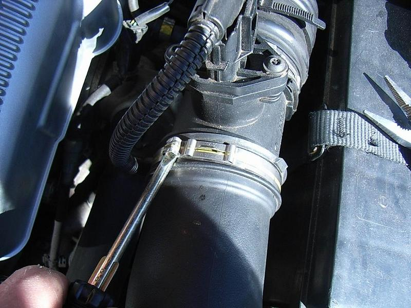
4:Remove the hose from the airbox and where u see the three bolts begin to drill using a power drill on the hammer setting,
reason for the hammer setting is the vibration will help loosen the bolts and also the heat from the drilling will melt the
plastic surrounding the bolt and will help get it out. The pic below is just after i've replaced the bolts.
(Sorry I didnt get a pic at this point).
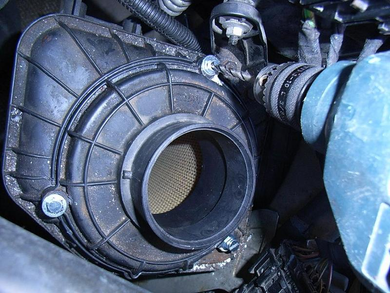
5: Remove the filter.
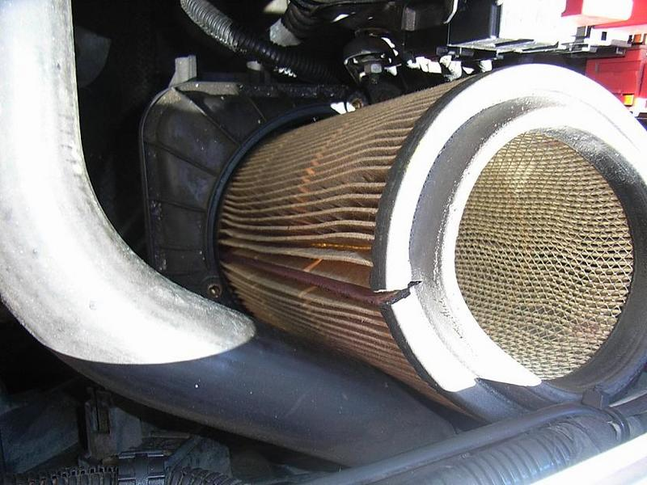
6: Once you have drilled them out, the parts that the bolts screw into will come out. These should be glued back in or
if it breaks then use the cement compound to fill the hole and when it dries drill it so that the bolt goes into it.
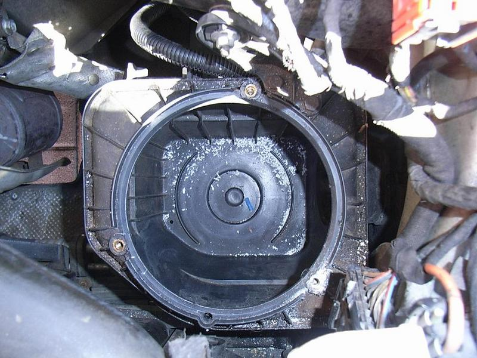
7: Pic of the part that the bolt goes into. This came out after drilling, so i glued it back in. You can see in the pic one of the new bolts fitting perfectly into it.
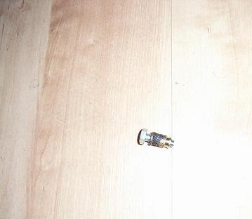
8: Hover out the airbox to remove any dirt.
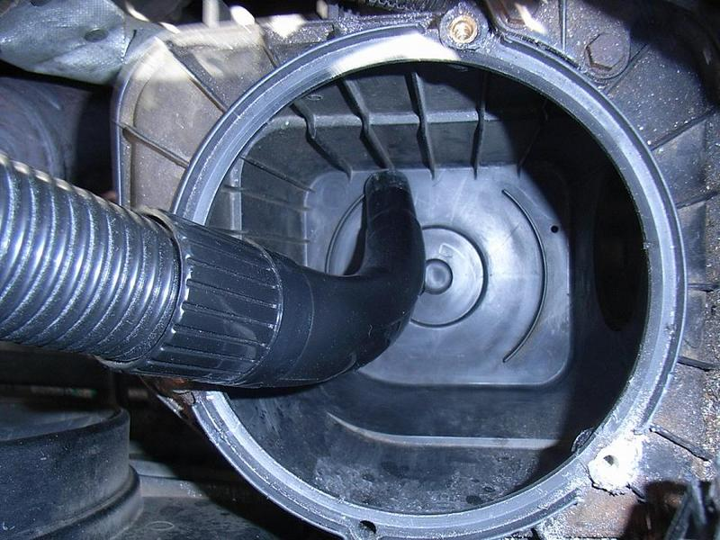
9: The lid might get damaged when u drill the bolts out so using the cement compound repair the lugs.
When the cement dries hard, in about an hour, you can drill new holes.
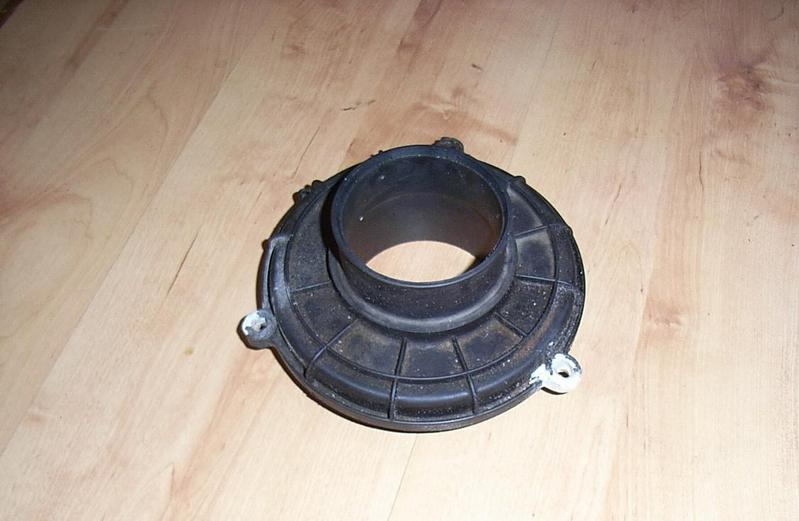
10:Now replace the old filter with the new one being careful not to damage it u might need to bend it a little to get it in.
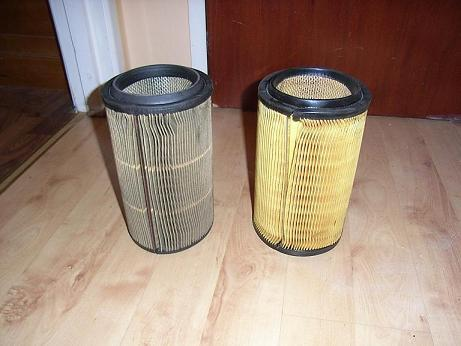
11: Now put on the cover and put in the bolts,reason i got a screw in on of the hole is that i dropped one on the bolts
into the engine bay. So my tip is to buy more than 3 bolts. Also dip the bolts in oil or grease or copper slip before putting them in to stop them rusting.
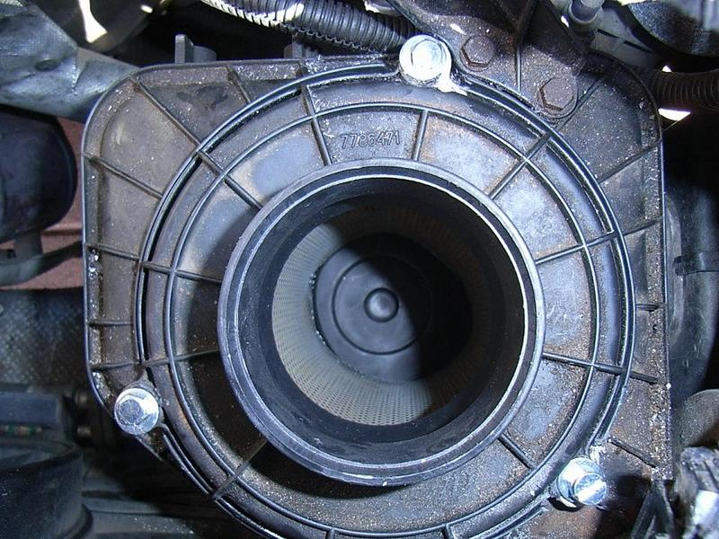
12: Now connect the air pipe back onto the airbox and then reconnect the clips. This is hard work with the plyers, if you have the
proper tool then you find this easy. If in the end you want to give up, then you can use a julie clip (just make it nice a tight).
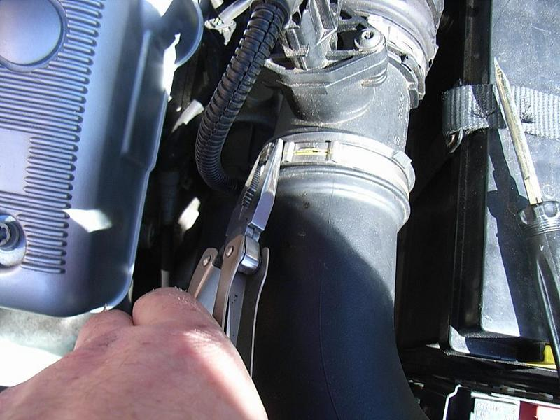
13: Reconnect the lower part of the air intake pipe to the air box. Again a jubli cip here makes life a lot easier.
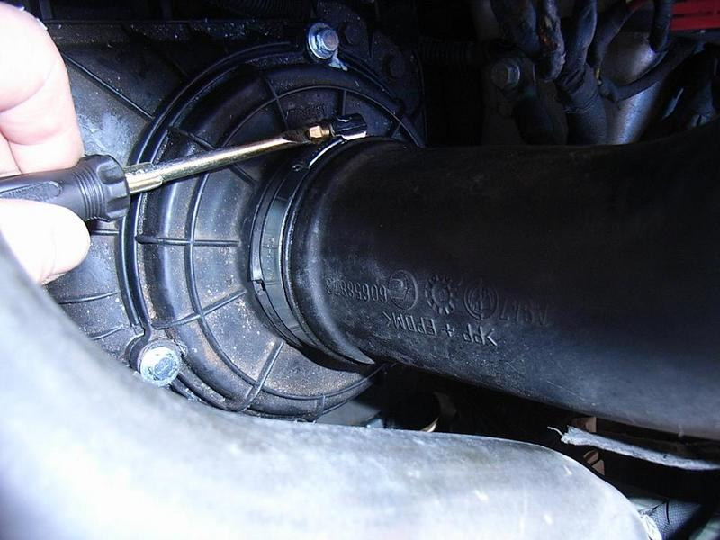
Once its all done you've saved yourself a small fortune, now go spend it on something for the car before the missus smells the money saved!
16: Go for a beer!!
| Hard work and pictures by... |
Guide created with assistance of... |
| miximup (Sam) |
Jeff_Porter |
 |
|
I hope this helps some of you out.
- alfa156.net - miximup (sam).
|
.: Changing Airbox Filter :. |
|